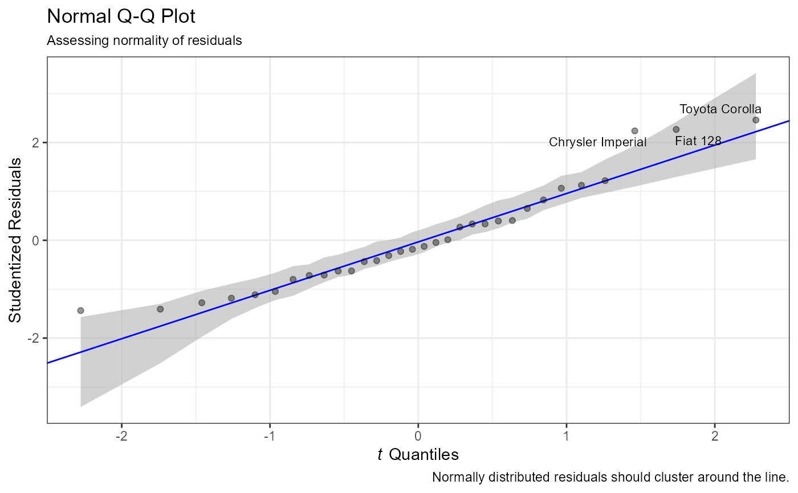
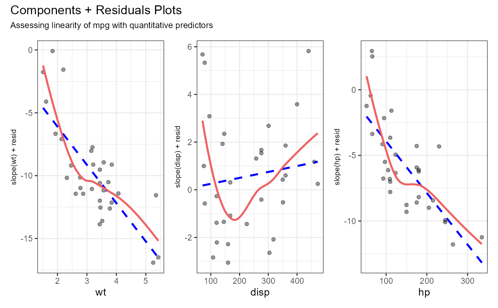

Diagnostics for Multiple Regressions
diagnostics.mreg.RdProvides diagnostics tests and graphs for a linear model
# S3 method for mreg diagnostics(x, output = "brief")
Arguments
| x | an object of class |
|---|---|
| output | A parameter with two levels which indicates whether to display brief diagnostics or extended (additional) diagnostics. |
Details
Provides diagnostics including a graph
for evaluating normality (qqplot),
, a graph for evaluating linearity (crPlots),
, a graph for evaluating homoscedasticity
(spreadLevelPlot), and a test for
evaluating homoscedasticity (ncvTest).
In addition, if output = "extended" it provides
a test of multicollinearity (vif),
a test for identifying outliers (outlierTest),
and a graph for evaluating influential observations
(influencePlot).
Examples
#>#> Warning: package 'car' was built under R version 4.1.2#>#> --------------- #> Non-normal Observations #> Which observations seem to make the model #> violate the normality assumption?#> Fiat 128 Toyota Corolla #> 18 20#> -------------- #> What power transform of the dependent variable would make our model have constant conditional variance?#> #> Suggested power transformation: -0.2594019 #> ------------- #> Test for Heteroskedasticity: #> Non-constant Variance Score Test #> Variance formula: ~ fitted.values #> Chisquare = 2.299904, Df = 1, p = 0.12938#> --------------- #> Non-normal Observations #> Which observations seem to make the model #> violate the normality assumption?#> Fiat 128 Toyota Corolla #> 18 20#> -------------- #> What power transform of the dependent variable would make our model have constant conditional variance?#> #> Suggested power transformation: -0.2594019 #> ------------- #> Test for Heteroskedasticity: #> Non-constant Variance Score Test #> Variance formula: ~ fitted.values #> Chisquare = 2.299904, Df = 1, p = 0.12938 #> --------------------- #> EXTENDED DIAGNOSTICS #> --------------------- #> Is there multicolinearity among any regressors? #> hp wt am #> FALSE FALSE FALSE #> --------------- #> Are there any outliers? #> No Studentized residuals with Bonferroni p < 0.05 #> Largest |rstudent|: #> rstudent unadjusted p-value Bonferroni p #> Toyota Corolla 2.516302 0.018108 0.57944 #> --------------- #> What are the influential observations?#> StudRes Hat CookD #> Lincoln Continental 0.03105609 0.2725847 9.369822e-05 #> Chrysler Imperial 2.26278429 0.2303244 3.339169e-01 #> Fiat 128 2.29817812 0.1113459 1.434999e-01 #> Toyota Corolla 2.51630241 0.1065328 1.585513e-01 #> Maserati Bora 0.89388651 0.4121968 1.410931e-01